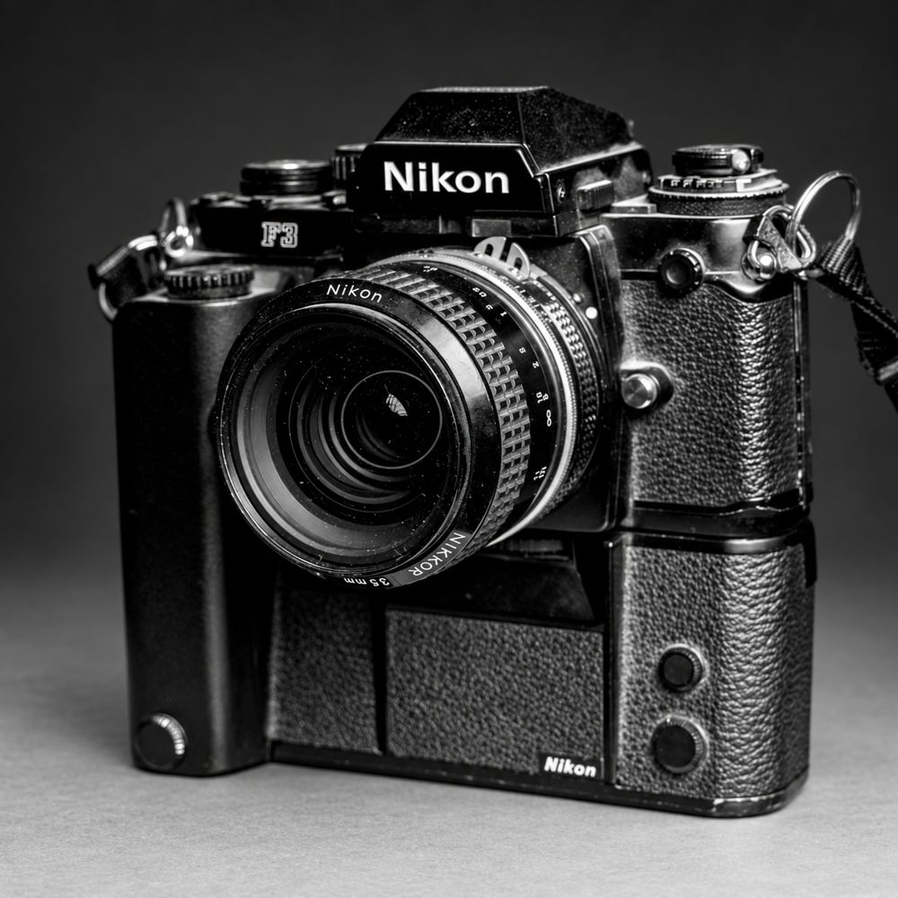
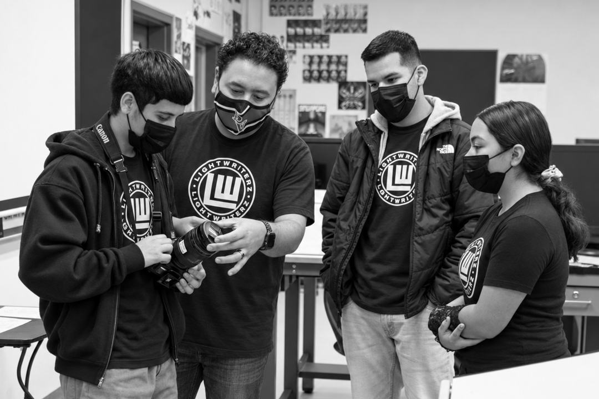
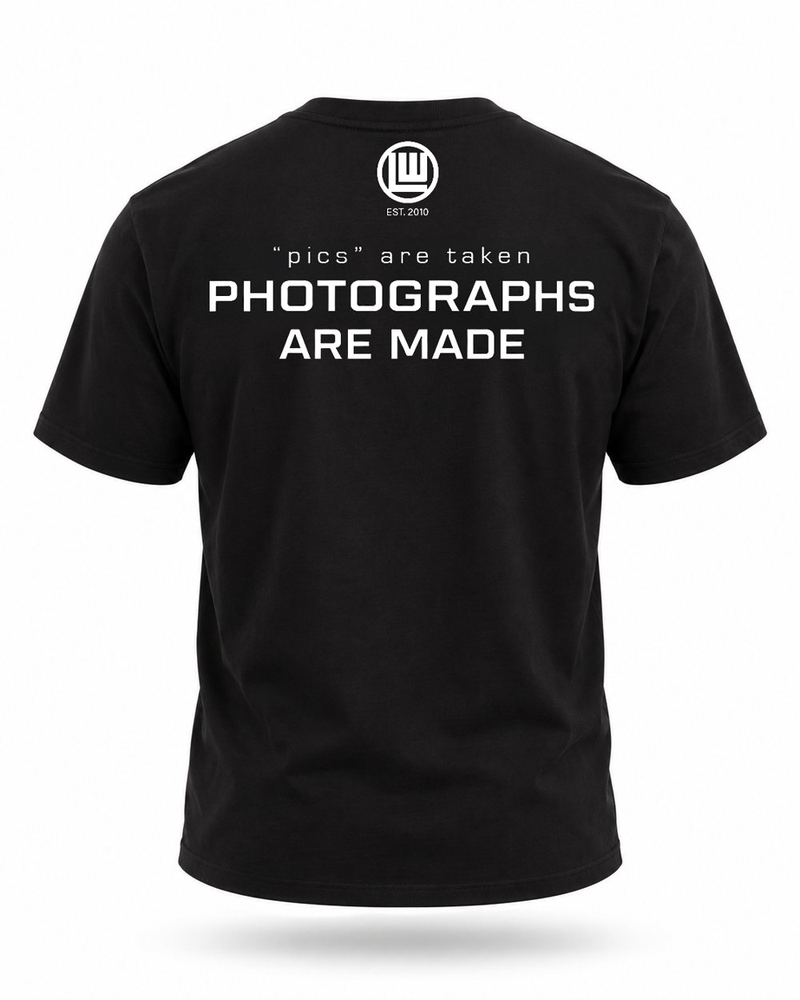
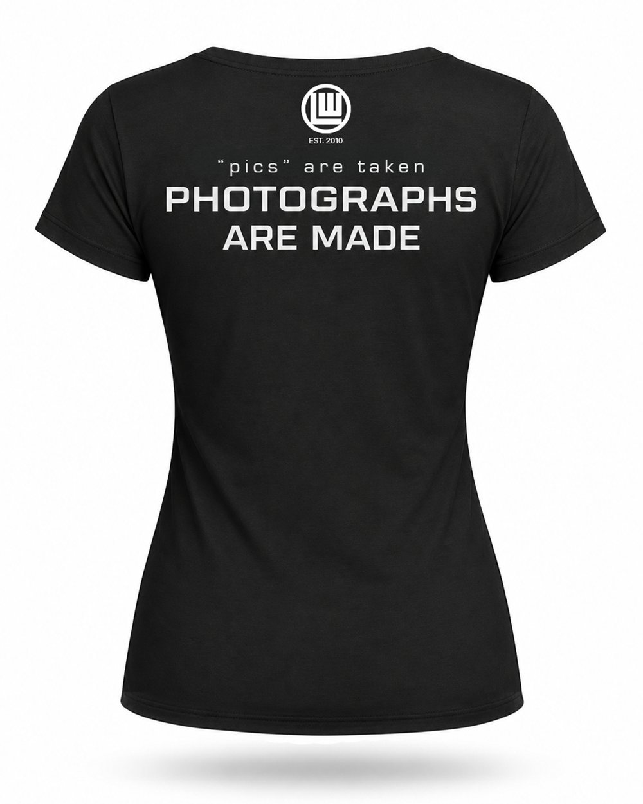

The Photographer Shirt
The Black Shirt
Earned onlyIt cannot be bought. It is handed only to students who have earned it through dedication and respect for the true art of making photographs.
Tap a shirt to see the front and back.
Founded 2010 · At PVHS since 2021
The photography club of Pioneer Valley High School. We practice the art of writing with light, with intention, patience, and craft.
Who we are
Light Writerz was founded in 2010 by four professional photographers: Chris Silva, Laura Garcia, Joshua Duffy, and Jeremy Wirth. Their goal was to inspire and educate young people in the true art of capturing light, at a highly creative and skilled level.
In 2021, just after students were allowed back into classrooms following the COVID-19 pandemic, Mr. Silva brought LWZ to Pioneer Valley High School, and it has called PVHS home ever since. It is run by student officers and advised by two of its founders, Chris Silva and Laura Garcia. The logo carries pride and responsibility: to continue a legacy of image making at the highest level of intention and passion.

Why “Light Writerz”
The word photography comes from Greek roots meaning “writing with light.” Every photograph is light, written onto a sensor or a piece of film. That is our name and our job: we are the Light Writerz.

Two shirts. One standard.
Every Light Writerz shirt stands for the same belief: pics are taken. Photographs are made.
One shirt is earned by our photographers. The other is chosen by the people who stand behind them. If you see the black shirt on campus, you know its owner earned it. They are not a “picographer.” They are a photographer.
The Photographer Shirt
It cannot be bought. It is handed only to students who have earned it through dedication and respect for the true art of making photographs.
Tap a shirt to see the front and back.
For those who believe
For parents, alumni, teachers, and friends who stand behind our photographers. Wear it to say you believe in making, not taking, and help preserve the true art of making photographs for the next generation.
Women’s cut shown. More fits coming.
Notify Me When It DropsOctober 6, 2026
LWZ is adding a seventh student officer position. Members vote at the meeting on Tuesday, October 13.
October 6, 2026
Members now check in to LWZ meetings by scanning a QR code with their phone.
September 29, 2026
The votes are in. Leo Rodriguez leads Light Writerz as President, with a full team of student officers ready for the year.
The world does not need more pics. It needs photographs with consequence.Chris Silva, LWZ co-founder and advisor
The LWZ Black Shirt Earned. Never given.


White on black. One print, one color, one classic configuration. No variations.
2026-2027 Release
We are currently searching for Light Writerz worthy of wearing the black shirt this school year. It is not handed out. It is earned through dedication, craft, and respect for the art of making photographs.
The Supporter Shirt For those who believe. On sale soon.